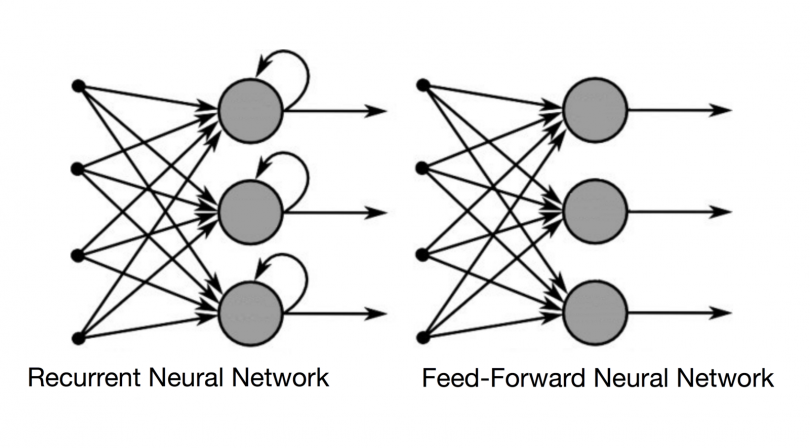
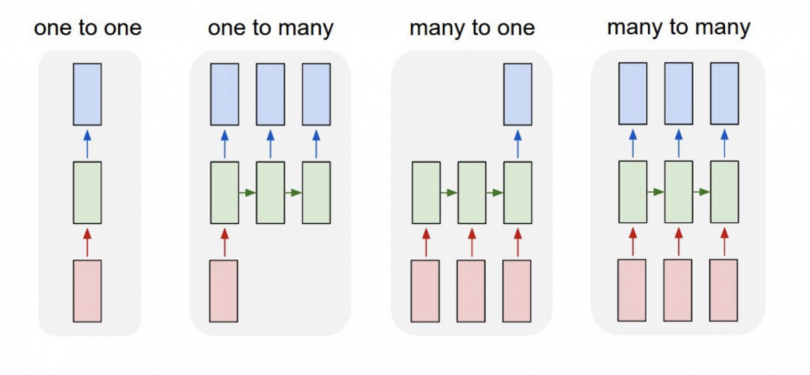

Data analysis
Loading the data
import pandas as pd
path = "./ "
train_ori = pd.read_csv(path + "train.csv ")
test_ori = pd.read_csv(path + "test.csv ")
sample = pd.read_csv(path + "sample_submission.csv ")
Loading the data
test.head()
EDA
EDA
Feature distribution
Feature distribution
Common features

Feature distribution
Common features

Feature distribution
Common features

Feature distribution
Common features

Feature distribution
Common features

Feature distribution
Common features

Feature distribution
Numerical features

Feature distribution
Numerical features

Feature distribution
Numerical features

Pressure over time

Inference
Inference
Since the given data is time series data, we prefer using a recurrent neural network for the purpose,
LSTM network to be more specific
Inference
Reason being, RNNs have a ability to remmeber data rather than to train and predict upon data once and for all
Classic feed forward network

Classic feed forward network
as opposed to RNN
Network choice
Many to one
Feature engineering
Data scaling
RS = RobustScaler()
train = RS.fit_transform(train)
test = RS.transform(test)
Modelling
Bidirectional ( LSTM ( 450 units) )
Bidirectional ( LSTM ( 350 units) )
Bidirectional ( LSTM ( 250 units) )
Bidirectional ( LSTM ( 150 units) )
Bidirectional ( LSTM ( 100 units) )
Input layer
Bidirectional ( LSTM ( 450 units) )
Bidirectional ( LSTM ( 350 units) )
Bidirectional ( LSTM ( 250 units) )
Bidirectional ( LSTM ( 150 units) )
Bidirectional ( LSTM ( 100 units) )
Input layer
Bidirectional ( LSTM ( 450 units) )
Bidirectional ( LSTM ( 350 units) )
Bidirectional ( LSTM ( 250 units) )
Bidirectional ( LSTM ( 150 units) )
Bidirectional ( LSTM ( 100 units) )
Dense( 50 )
Dense( 1 )
Result
Mean Absolute Error = 0.158
Runtime = 31315.8 seconds (8.7 hours)
Accelerator = TPU v3.8
Comparing manual pressure to pressure generated by model